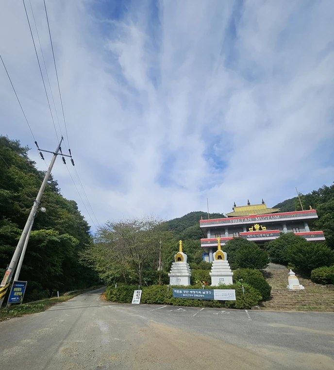
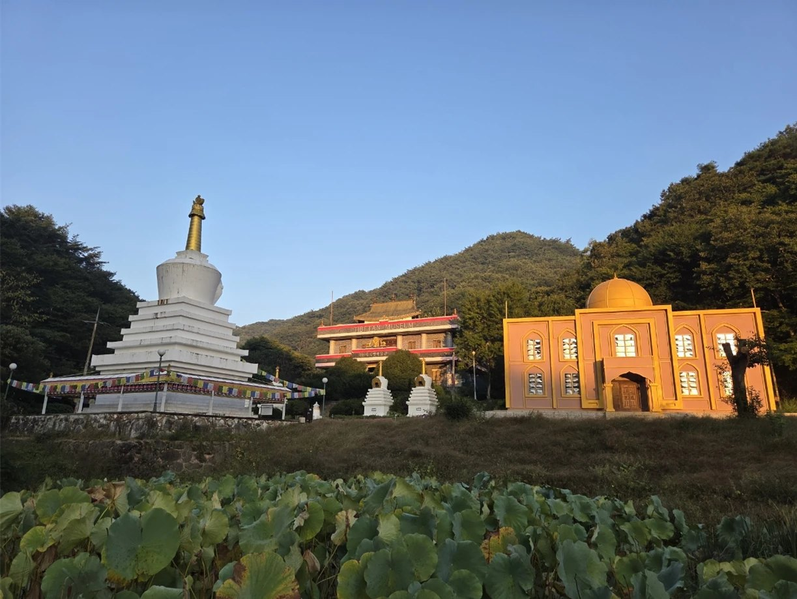

오시는 길 · 상담
대원사와 광주 상담실 위치, 상담 방법입니다.
꽃길숲 방문 전, 답사 예약은 필수입니다.담당자가 동행해 안내해 드립니다. 전화·문자로 날짜를 미리 알려 주세요.답사 예약 후 방문하신 분께 ‘친환경 봉안함’을 드립니다
꽃길숲 들어오는 길
대원사에 도착하시면 티벳박물관(TIBETAN MUSEUM) 왼쪽 옆길로 들어오세요. 그 길 끝에 꽃길숲 수목장이 있습니다.


담당자가 동행해 안내해 드리니, 꼭 답사 예약 후 방문해 주세요.
얼마나 걸리나요?
- 약 40분광주 동구 · 남구
- 약 1시간광주 전역
- 1시간 안팎화순 · 보성 · 순천 · 벌교 등 전남 동부권
자가용 기준이며 교통 상황에 따라 달라질 수 있습니다.
대원사 · 꽃길숲 수목장
광주 상담실
광주에 계신 분은 대원사까지 오시지 않아도 광주 분양사업부에서 상담받으실 수 있습니다.
참배 안내
- 입장료 · 주차요금없습니다.
- 주차대원사 주차장 이용 — 주차장에서 경내까지 걸어서 3분 이내
- 방문 시간대원사 경내는 시간 제한이 없습니다.
- 편의경내 전역 무료 와이파이
출처: 대원사 홈페이지(daewonsa.or.kr) 연혁·문화재·참배안내 기준
대중교통으로 오실 때
- 광주에서광천터미널 앞 또는 광주송정역에서 화순 사평 방면 버스(217·217-1·228번) 약 1시간 → 화순 사평에서 대원사행 군내버스 약 20분
- 광주 → 문덕면 직행광주 광천터미널에서 보성행 직행버스로 문덕면 하차(약 1시간) → 택시로 대원사
- 순천 · 벌교에서보성 시외버스터미널을 거쳐 문덕면 방면 버스 이용
- 택시문덕면 또는 화순 사평에서 15~20분, 약 2만 원
- 자가용내비게이션에 ‘대원사’ 또는 ‘보성군 문덕면 죽산길 506-8’ 입력 — 대원사 삼거리부터 5.5km 벚꽃길을 따라 들어옵니다.
버스 노선·시간은 바뀔 수 있으니 출발 전 확인해 주세요. 상담 전화로도 안내해 드립니다.